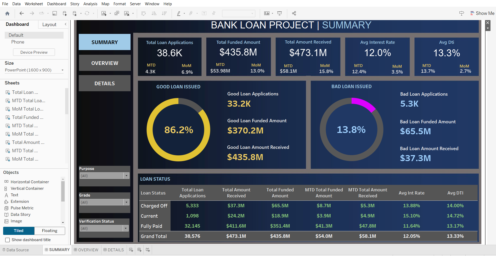
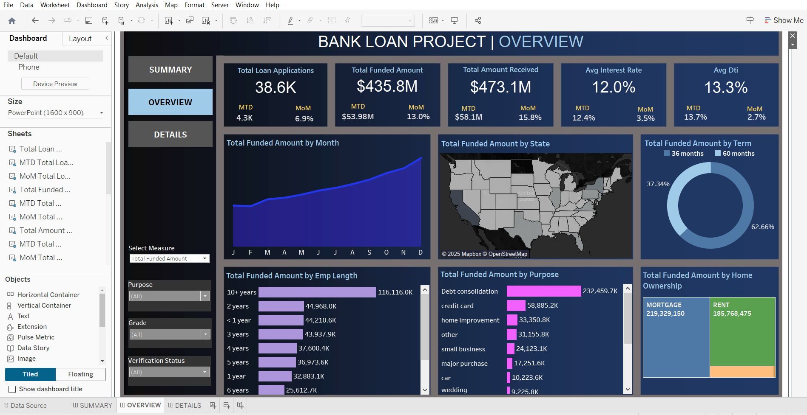
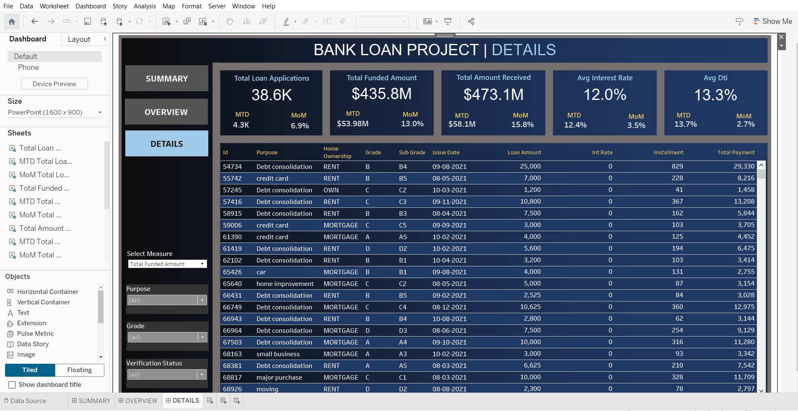

Project Details
Introduction
- Objective: To monitor and assess the bank's lending activities, visualize trends, and evaluate loan performance.
- Problem Statement: Identify patterns in "Good Loans" vs. "Bad Loans," and provide visual insights to support data-driven decisions.
- Scope: Analysis includes loan applications, funded amounts, repayments, borrower demographics, and loan statuses across multiple dimensions.
Key Metrics and KPIs
- Loan Portfolio Metrics:
- Total Loan Applications: Including Month-to-Date (MTD) and Month-over-Month (MoM) changes.
- Total Funded Amount: MTD and MoM tracking.
- Total Amount Received: Cash flow and loan repayment analysis.
- Average Interest Rate: Across all loans with MTD and MoM variations.
- Average Debt-to-Income Ratio (DTI): MTD and MoM trends.
- Good Loan Metrics:
- Percentage and total count of "Good Loans" (Fully Paid and Current statuses).
- Funded and received amounts for "Good Loans."
- Bad Loan Metrics:
- Percentage and total count of "Bad Loans" (Charged Off status).
- Funded and received amounts for "Bad Loans."
- Loan Status Overview:
- Categorized by metrics such as total applications, funded amounts, repayments, interest rates, and DTI.
Methodology
- Data Preparation:
- Loaded, cleaned, and standardized the dataset in Tableau.
- Categorized loans into "Good Loans" and "Bad Loans" based on status fields.
- Created calculated fields for KPIs like MoM and MTD metrics.
- Data Visualization:
- Designed interactive dashboards using Tableau features such as filters, tooltips, and actions.
- Created charts for loan trends, borrower distribution, and repayment analysis.
- Analysis Approach:
- Compared MoM and MTD changes to identify growth areas and potential risks.
Dashboards and Visualizations
- Summary Dashboard:
- Overview of key metrics: Total applications, funded amounts, received amounts, interest rates, and DTIs.
- Overview Dashboard:
- Line Chart: Monthly trends in applications, funding, and repayments.
- Filled Map: Geographic distribution of loans by state.
- Donut Chart: Loan distribution by term length (e.g., 36 months, 60 months).
- Bar Charts: Borrower employment length and loan purpose.
- Tree Map: Loan metrics by home ownership status.
- Details Dashboard:
- Integrated Metrics:Loan performance metrics, borrower demographics, and repayment trends.
- Interactive Features:Filters for loan statuses, purpose and grade for deeper insights.
Results and Findings
- Loan Portfolio Insights:
- Significant MoM growth in funded amounts and applications in specific months
- High average interest rates for loans with higher DTIs
- Good vs. Bad Loans:
- "Good Loans" account for the majority, with fully paid loans showing the highest repayments
- "Bad Loans" (Charged Off) comprise a smaller but notable percentage, requiring mitigation strategies
- Regional and Demographic Trends:
- Certain states show higher loan activity; targeting these regions could improve outcomes
- Employment history and home ownership have a measurable impact on loan success rates
Recommendations
- Focus on Good Loan Profiles: Prioritize funding loans with low DTIs and consistent repayment history.
- Improve Loan Application Screening:Implement stricter criteria to reduce the volume of bad loans.
- Regional Targeting: Invest resources in states with high lending activity to expand market share.
Conclusion
Tableau-based analysis provides comprehensive insights into the bank's loan portfolio. Interactive dashboards enable dynamic exploration of loan metrics, aiding in strategic decision-making. By focusing on borrower profiles and regional trends, the bank can optimize its portfolio and reduce risk exposure.
Appendix
Figures
Fig 1. Bank Loan Summary Dashboard
Fig 2. Bank Loan Overview Dashboard
Fig 3. Bank Loan Details Dashboard